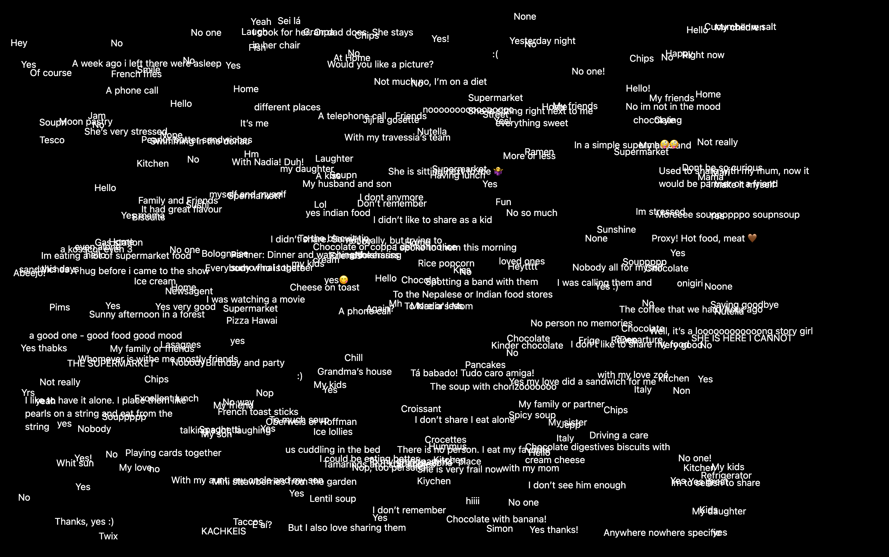

Data Trash Snack Bar is an interdisciplinary performance exploring what happens when new technologies interfere with and reshape the human body, mind, and social relationships. Developed collaboratively and horizontally, the work brings together AI companionship, robotics, internet culture, audience participation, and theatrical elements to create an absurd and playful world shaped by mimicry, AI slop, and existential questions.
At the centre of the work is the question of where our data goes—and where it ultimately ends up. Through participatory situations, the performance turns data, technology, and digital culture into something that can be encountered, consumed, and played with.
The work also explores feedback loops between humans and machines. AI-generated media attempts to imitate human behaviour, often producing strange movements, visual artefacts, and uncanny forms of expression. The performers then imitate these AI imitations, creating a recursive loop in which humans imitate machines that imitate humans. This process becomes both playful and unsettling, raising questions about authenticity, agency, and what remains human when our own behaviours are continuously reflected, processed, and reproduced by machines.
Data Trash Snack Bar is developed by Data Mama Collective consists of
Data Trash Snack Bar is supported by TalentLAB 2026 at Théâtres de la Ville de Luxembourg. Mentored by Sarah Baltzinger & Isaiah Wilson
Final showing (20 mins scratch performance)
Data trash from the audience
